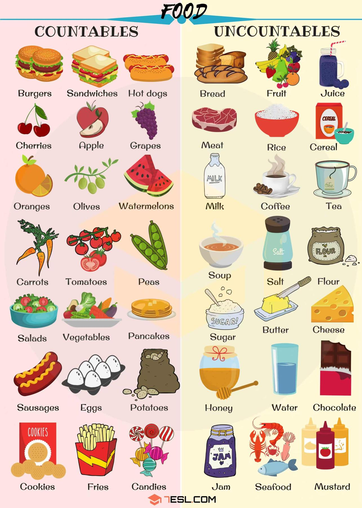
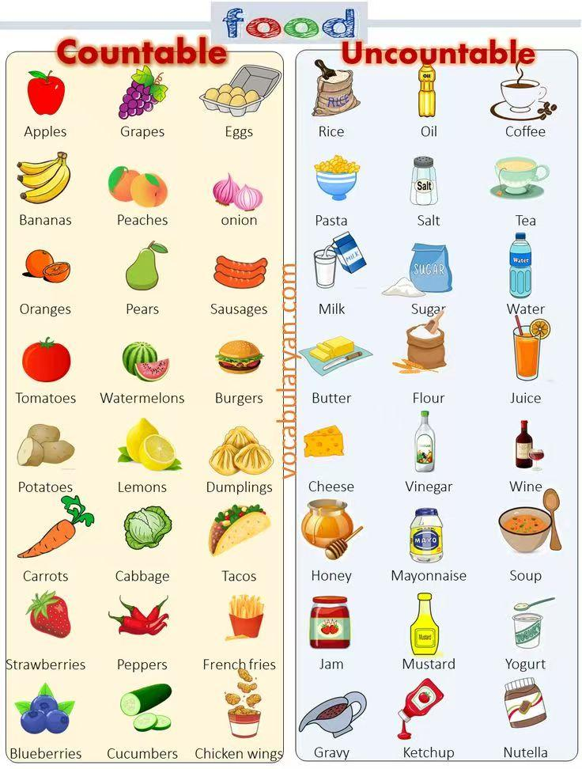

🖼️ Source Pictures · Countable & Uncountable Food 🍽️
PDF 开头的两张食物分类图。先观察图片，再判断名词应该用 is 还是 are。


📌 Part 1 · There be 句型 🧠
There is a big watermelon.
有一个大西瓜。
There is some milk.
有一些牛奶。
There are some apples.
有一些苹果。
🍱 Part 2 · Picnic Vocabulary 🔊
点击卡片听发音。注意哪些是可数，哪些是不可数。
🎵 Part 3 · A Picnic Song 📖
A picnic, a picnic,
A picnic's lots of fun!
野餐，野餐，野餐非常有趣！
Come with us, there's lots of food,
For a picnic in the sun.
跟我们一起来吧，有很多食物，在阳光下野餐。
Are there any apples?
Is there any bread?
Yes, there's lots of lovely food,
For all my friends and me.
有苹果吗？有面包吗？是的，有很多可爱的食物，给我和所有朋友。
Is there any milk?
Is there any juice?
Yes, there are lots of lovely drinks,
Come along and see.
有牛奶吗？有果汁吗？是的，有很多好喝的饮料，过来看看吧。
Are there any sandwiches?
Is there any cake?
Yes, there are lots of lovely things,
For a picnic by the lake.
有三明治吗？有蛋糕吗？是的，有很多可爱的东西，在湖边野餐。
✅ Part 4 · Read and Choose 🧩
✍️ Part 5 · Picnic Basket Grammar Fill 🧺
点击空白处核对答案。
Look at our picnic basket! It is so big.
In the basket, ________ some apples. They are red and sweet.
________ there any bread? Yes, there ________ two pieces of bread.
But there ________ any juice, because my sister drank it.
For drinks, there ________ some milk and three boxes of orange juice.
There ________ also some sandwiches. They are my favourite.
"________ there any cakes?" my little brother asks.
No, but there ________ a big watermelon. Let's eat it!
We have so many ________ to eat.
There ________ lots of love in our picnic, too!
🛒 Part 6 · A Supermarket Food Adventure 📚
分区域阅读。点击每段显示中文。
Opening. On a sunny Saturday morning, Ben, Lucy, Horrocks and Zelda push a big shopping cart into the supermarket. There is a big supermarket with shining lights, and four happy friends are ready for an adventure.
开头：在一个阳光明媚的星期六早晨，Ben、Lucy、Horrocks 和 Zelda 推着一辆大购物车走进超市。超市很大，灯光明亮，四个快乐的朋友准备开始一场冒险。
Fruit section. There are red apples, yellow bananas, and juicy oranges piled high like little hills. There is also a huge green watermelon that looks like a giant ball. Horrocks pats the watermelon and Zelda sees a tiny ant crawling on a grape.
水果区：这里有红苹果、黄香蕉和多汁的橙子，堆得像小山一样高。还有一个巨大的绿西瓜，看起来像一个大球。Horrocks 拍了拍西瓜，Zelda 看见一只小蚂蚁在葡萄上爬。
Vegetable section. There are long carrots, round tomatoes, leafy lettuce, and a huge pumpkin sitting like a king. Ben calls it the Pumpkin King and says there are broccoli soldiers standing around him. Lucy says there is a broccoli monster, too. The children make up stories in the vegetable aisle.
蔬菜区：这里有长胡萝卜、圆番茄、绿叶生菜和一个像国王一样坐着的大南瓜。Ben 说它是南瓜国王，还说周围有西兰花士兵。Lucy 说这里还有一个西兰花怪物。孩子们就在蔬菜过道里编故事。
Bakery section. There are fresh baguettes, soft buns, and sweet doughnuts with shiny glaze. A lovely warm smell fills the aisle. Horrocks says there is magic in the smell. Zelda imagines little fairies baking inside the oven and casting spells, so the bread is fluffy.
烘焙区：这里有新鲜法棍、软面包和带闪亮糖衣的甜甜圈。温暖好闻的香味充满整个过道。Horrocks 说香味里有魔法。Zelda 想象小仙子在烤箱里烘焙并施魔法，所以面包才这么松软。
Drinks section. There are colorful juice boxes, big milk jugs, rows of fizzy soda cans, and a whole shelf full of strawberry yogurt. Lucy sees a pink cow on the strawberry milk box, and Ben counts five dancing strawberries. They almost want to put every flavor of juice into their cart.
饮料区：这里有彩色盒装果汁、大牛奶壶、一排排冒泡的汽水罐，还有一整架草莓酸奶。Lucy 在草莓牛奶盒上看见一头粉色奶牛，Ben 数出五个跳舞的草莓。他们几乎想把每一种口味的果汁都放进购物车。
Snack section. There are crispy chips, salty pretzels, chocolate bars with nuts, and a whole shelf just for cream-filled cookies. Horrocks finds his favorite star-shaped crackers and hugs the bag like a treasure. Zelda counts twenty different kinds of candy, her eyes sparkling.
零食区：这里有脆薯片、咸脆饼、带坚果的巧克力棒，还有一整架专门放夹心饼干。Horrocks 找到他最喜欢的星形饼干，像抱着宝物一样抱住袋子。Zelda 数出二十种不同的糖果，眼睛闪闪发亮。
Checkout. They fill the cart with all kinds of goodies and go to the checkout. The cashier smiles and says, "There is so much food in your cart!" Ben answers proudly, "There are four hungry friends ready for a big picnic!"
结账：他们把各种好吃的东西装进购物车，然后去收银台。收银员笑着说：“你们的购物车里有好多食物！”Ben 自豪地回答：“有四个饥饿的朋友准备去大野餐！”
Going home. Outside the supermarket, Lucy says there is a story in every food they choose. Zelda says there are always surprises in the supermarket: today they find a king, fairies, and dancing strawberries.
回家路上：走出超市后，Lucy 说他们选择的每一种食物里都有一个故事。Zelda 说超市里总是有惊喜：今天他们找到了国王、仙子和跳舞的草莓。
Ending. Horrocks hugs his star-shaped crackers and says there is love in every bite they share. They laugh and skip home. Tonight they cook a big feast together and eat all the happiness they find in the supermarket. In that big store, there is not just food, but also laughter, friendship, and endless imagination.
结尾：Horrocks 抱着他的星形饼干，说他们分享的每一口食物里都有爱。他们笑着跳着回家。今晚他们一起做一顿大餐，吃下他们在超市里找到的所有快乐。在那家大商店里，不只有食物，还有欢笑、友谊和无尽的想象力。
❓ Part 7 · Story Questions 💬
✍️ Part 8 · 汉译英 There be 专练 ✅
1. 野餐篮子里有一些苹果。
________________________
2. 有一些面包。
________________________
3. 篮子里没有果汁。
________________________
4. 没有三明治。
________________________
5. 篮子里有一些牛奶吗？
________________________
6. 有一些蛋糕吗？
________________________
7. 篮子里有多少个苹果？
________________________
8. 有多少面包？
________________________
9. 篮子里有什么？
________________________
10. 篮子里有两片面包和一些牛奶。
________________________